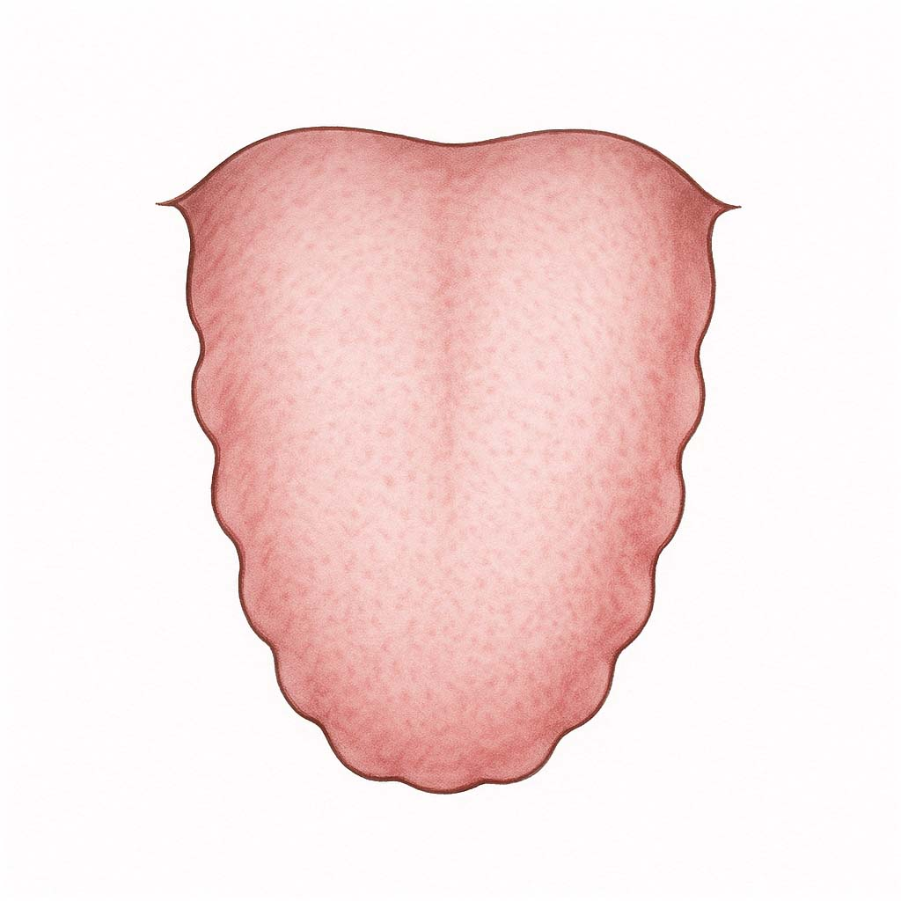
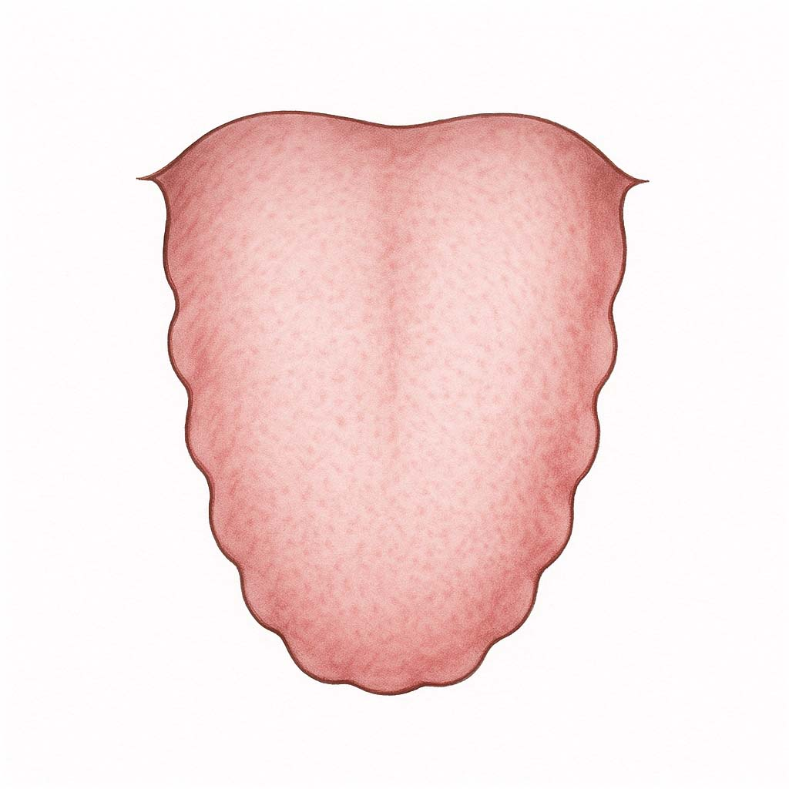
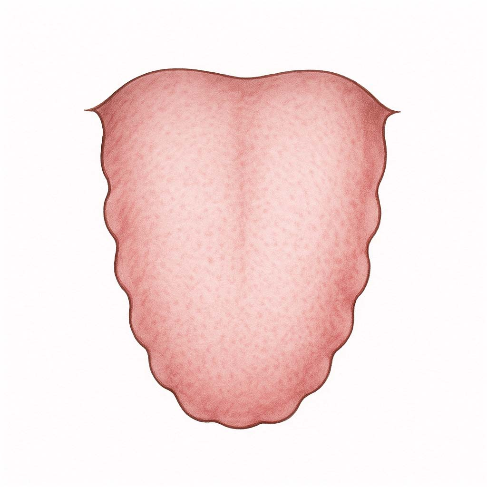

舌の特徴（正常との比較）
 

舌の特徴
胃腸が弱くて、疲れやすい。「気」が不足気味なので気の補充が必要ですが、その前に脾（胃腸）のメンテナンスが大切です！『後天の気』というエネルギーをつくる脾（胃腸）の働きが弱っています。肥満気味でむくみやすい。疲れやすい、やる気がでない、湿度が高いとしんどい。軟便。おりもの多い。甘いものや油っこいものが好き。
胃腸が弱く食欲不振。慢性胃腸炎、下痢・便秘。胃下垂、脱肛、腎臓下垂、子宮下垂、子宮脱など内臓下垂。立ちくらみや低血圧、パワーの不足。倦怠感や手足がだるい。免疫力低下、内出血、風邪引きやすい。慢性気管支炎、気管支喘息、アトピー、多汗症、紫斑病、ネフローゼなど。

舌の特徴
「腎陽虚」の特徴もある。（脾腎陽虚証）「湿痰」、「血虚」、「血瘀」にもなりやすい。
必要以上にムリして食べないこと。胃腸を冷やさないこと。冷たい飲み物や食べ物、生もの（魚、野菜、果物）、甘い物を避ける。
未病先防1：元気が無いからといってムリに食べるのはかえって脾（胃腸）の負担を増やし働きを低下させてしまいます。肉、魚、乳製品といった高たんぱく、高脂肪食ほど消化にエネルギーを使い、『脾虚』に拍車をかけるので要注意です。
未病先防2：冷たいものや水分を取りすぎると、脾（胃腸）の熱を奪い働きを低下させます。食欲がない時は、お粥やスープなど温かく柔らかく調理した物を摂りましょう。
既病防変：カラダを動かして「気」が足りないことを実感し、睡眠と休息を取り、徐々に脾気を強める。
脾経・胃経。ゆったりした有酸素運動や、軽い全身運動。効果的なツボ=脾兪、足三里、陰稜泉。効果的なヨガ＝バッダコナアサナ、スプタヴィラアサナ、ブジャンガアサナ、ウシュトラアサナなど。
益気補虚（えっきほきょ） - 胃腸の働きを良くして気を補う。
米、もち米、山芋、じゃがいも、椎茸、にんじん、豆腐、鶏肉、うずら卵、牛肉、青魚など。消化に良いもの、温かいもの、柔らかいもの。
無理せず、コツコツと「気」を養うことが大切です。脾は「気血生化の源」と言われ、気血製造機や気血製造工場のようなものです。日が弱っていては気血もたっぷり作れません。脾の働きを健やかにして少ない食事でもたっぷりの気血を作るようにメンテナンスしましょう。
しっかり寝ること。「清気」という気をつくる肺は、夜に気血が集中して働きが高まります。